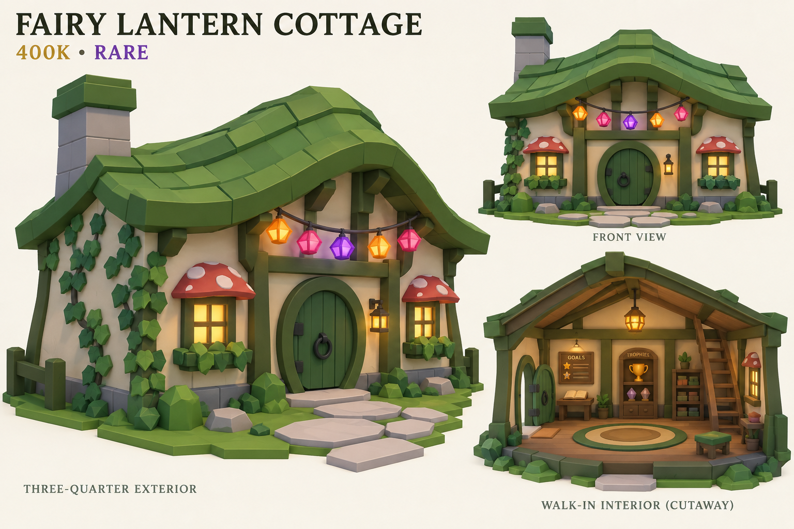
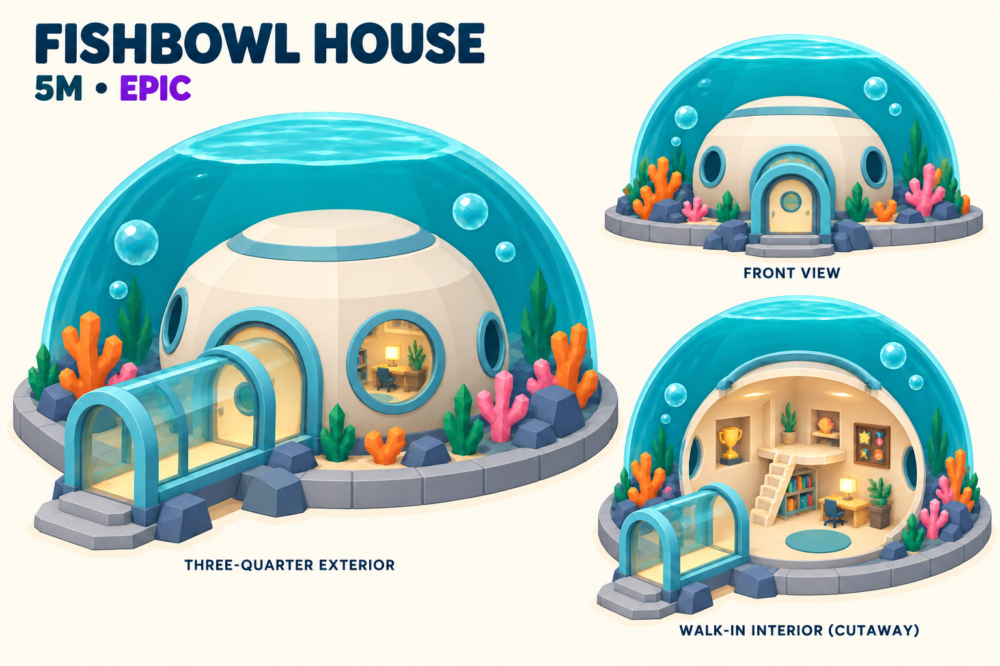
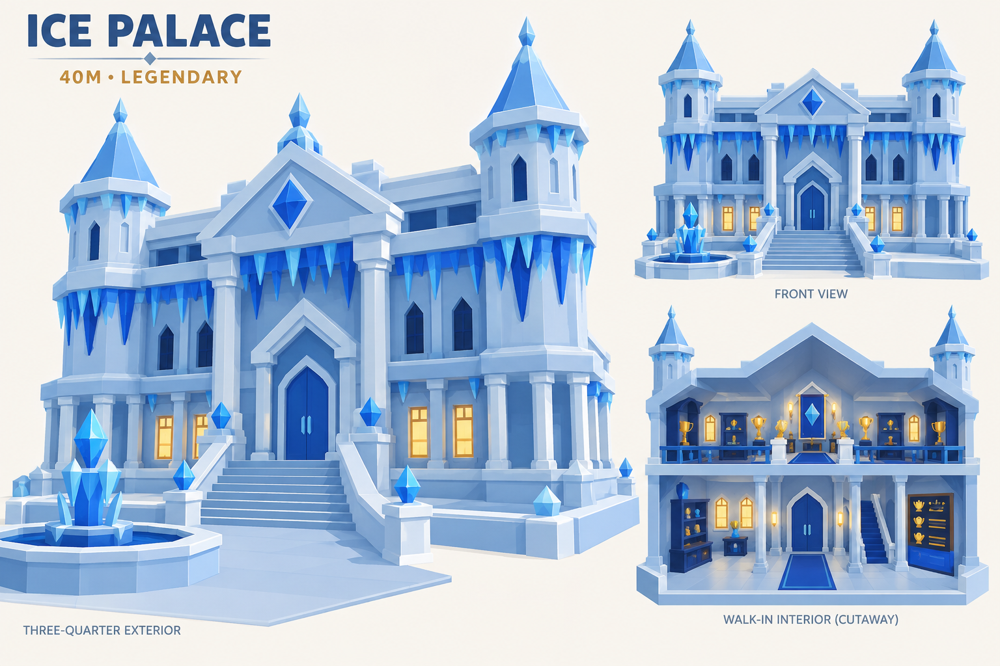
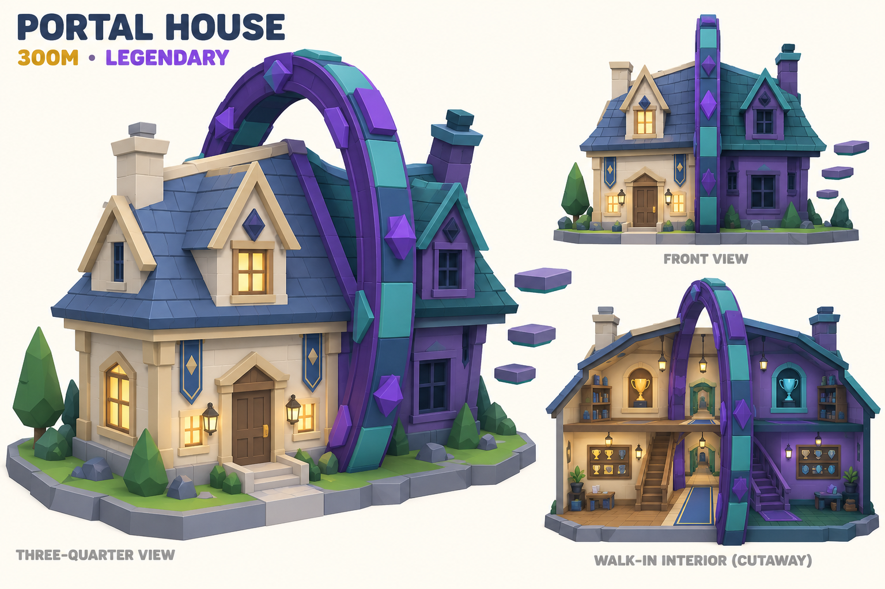
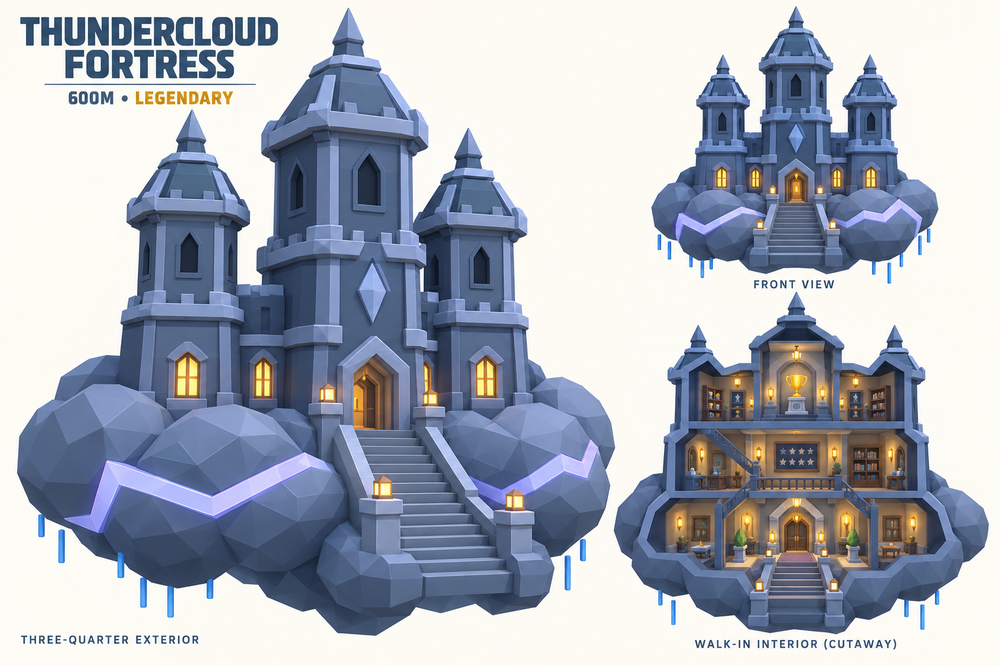
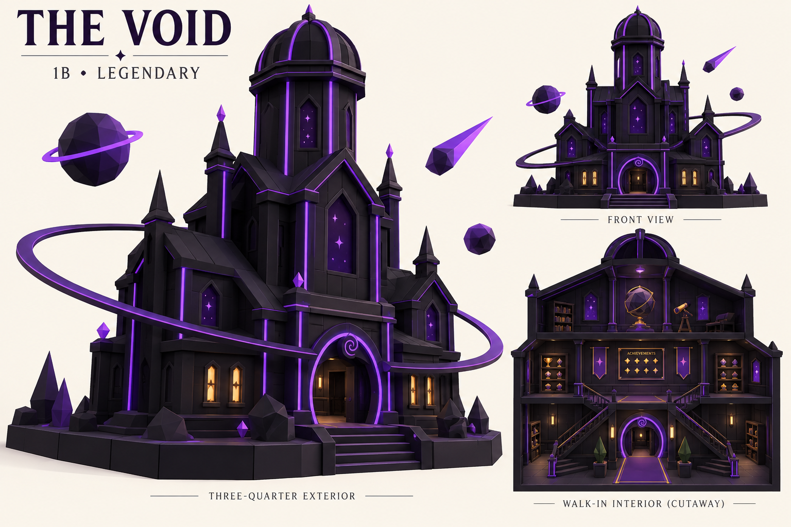
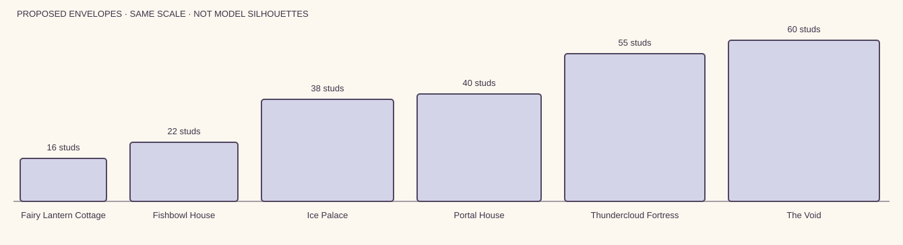

{kind=link}

400,000 · RARE · ID villa
Fairy Lantern Cottage
Target envelope 32 × 26 × 16 studs. 1 accessible floor(s). Actual model measurements pending.
Six new concept sheets explore the revised catalogue: real walk-in rooms, distinct silhouettes, and one all-black house at the top. All Legendary houses now have an ambient-motion specification.

Target envelope 32 × 26 × 16 studs. 1 accessible floor(s). Actual model measurements pending.

Target envelope 40 × 36 × 22 studs. 1 accessible floor(s). Actual model measurements pending.

Target envelope 49 × 36 × 38 studs. 2 accessible floor(s). Actual model measurements pending.

Target envelope 46 × 42 × 40 studs. 2 accessible floor(s). Actual model measurements pending.

Target envelope 52 × 46 × 55 studs. 3 accessible floor(s). Actual model measurements pending.

Target envelope 56 × 48 × 60 studs. 3 accessible floor(s). Actual model measurements pending.
These rectangles show the proposed dimensions at exactly the same scale. They are planning bounds, not measured models or silhouette art.

One recognisable motion per home, with extra layers at the top. Floors, stairs and doorways stay fixed. The portal study demonstrates timing; final runtime integration belongs to Fable.
Next individual concept sheets: Crystal Spire and Beached Galleon. Walk-in interiors remain inside the physical street houses.
{kind=link}
{kind=link}
{kind=link}
{kind=link}
{kind=link}
{kind=link}
{kind=link}
{kind=link}